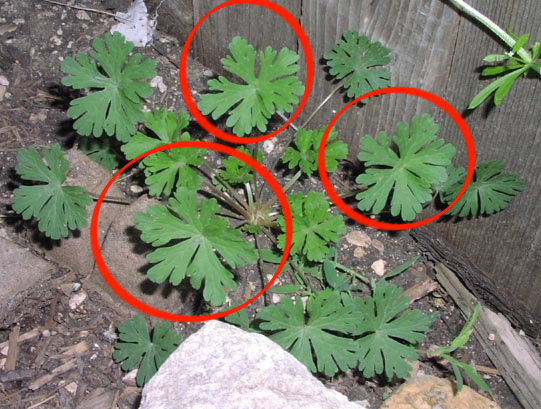
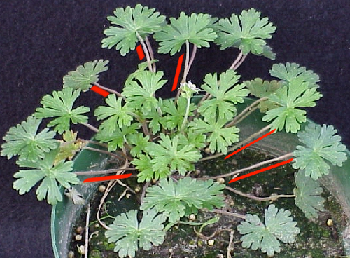
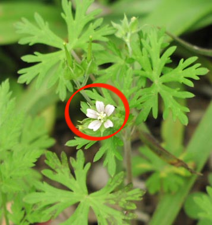

Carolina Geranium ( Geranium carolinianum)

† 
The Carolina Geranium grows upright, with erect stems that can grow up to 28 inches tall. The stems are usually pink or red in color, with dense hairs. The leaves grow from .75 to 2.5 inches wide and are rounded, with deep divides separating the leaf into 5 to 9 segments. Each segment has large rounded toothed edges.